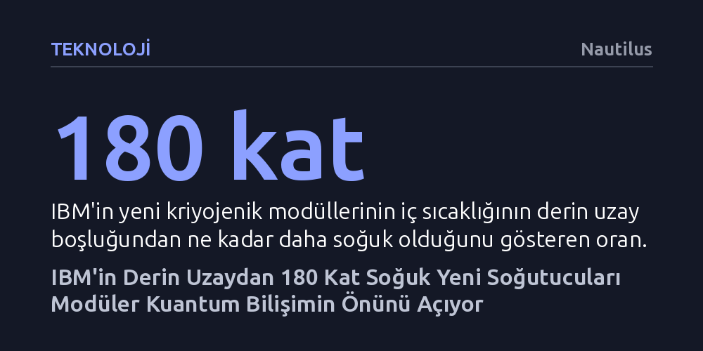

TEKNOLOJI · Nautilus · 2026-09-12
IBM, derin uzaydan 180 kat daha soğuk yeni modüler kriyojenik soğutucularıyla kuantum çiplerini bir araya getirerek hata toleranslı ve kesintisiz çalışan sistemler kurmayı hedefliyor. Bu teknoloji, binlerce kubitin süperiletken kablolarla bağlanmasını sağlayarak karmaşık moleküler kimya ve malzeme bilimi problemlerinin çözümüne zemin hazırlıyor.
Kuantum bilgisayarların sadece laboratuvardaki kırılgan deneylerden ibaret kalmayıp oda büyüklüğündeki modüler dondurucularla pratik, hataya dayanıklı ve kesintisiz çalışan devasa sistemlere dönüşeceğini gösteriyor.

IBM, kuantum bilişimde ölçeklenme sınırlarını aşmak amacıyla devasa boyutlarda yeni kriyojenik soğutma modüllerini tanıttı. Yan yana getirildiğinde yaklaşık 2,4 metre yüksekliğe ve genişliğe ulaşan bu iki büyük ünite, binlerce kuantum çipinin adeta LEGO parçaları gibi üst üste ve yan yana dizilebileceği geniş bir iç hacim sunuyor. Sistem, kuantum işlemcilerin hassas yapısını dış dünyanın tüm gürültüsünden korumak üzere özel olarak tasarlandı.
Bu dev soğutucuların içindeki ortam, derin uzay boşluğundan 180 kat daha soğuk bir seviyeye, mutlak sıfır noktasının yalnızca binde birkaçı derece üzerine kadar indiriliyor. Isı, titreşim ve elektromanyetik radyasyon gibi en küçük çevresel etkilerin dahi kuantum kararlılığını bozduğu düşünüldüğünde, bu yalıtım hayati bir önem taşıyor. Sistemin bu aşırı soğuk çalışma ortamına ulaşması ve tamamen dengelenmesi ise yaklaşık beş gün sürüyor.
Kuantum bilgisayarların bu denli zorlu soğutma altyapılarına ihtiyaç duyması, temel hesaplama birimi olan kubitlerin fiziksel doğasından kaynaklanıyor. Klasik bilgisayarlar elektrik sinyallerini kesin 0 veya 1 değerleriyle işlerken, kubitler aynı anda her iki durumun olasılıklarını barındırarak hesaplama gücünde katlanarak artan bir kapasite sağlıyor. Ancak bu durum, sistemin en ufak sıcaklık dalgalanmasında dahi çökecek kadar hassas ve dengesiz olmasına yol açıyor.
IBM’in geliştirdiği mimarinin en kritik yeniliklerinden biri, "L-bağlayıcı" olarak adlandırılan süperiletken kablolardır. Bu kablolar, kubitlerin içinde bulunduğu aşırı soğuk ortamı terk etmelerine gerek kalmadan, kuantum bilgisini modüller arasında kayıpsız bir şekilde taşıyabiliyor. Böylece kubitlerin hassas kuantum özelliklerini yitirmeden kutular arası veri aktarımı yapması mümkün hale geliyor.
Kuantum teknolojisinin bugün karşılaştığı en büyük engel, aşırı soğuk koşullarda bile tekil kubitlerde rastlanan hatalar ve kararsızlıklardır. IBM, tek bir çipe yüz binlerce kubit sığdırmaya çalışmak yerine, çipleri modüler olarak birbirine bağlayarak hacmi büyütmeyi amaçlıyor. Birbirleriyle uyum içinde çalışan çok sayıda çip, hataları kendi aralarında anlık olarak düzelterek sistemin hata toleransını yukarı çekiyor.
Şirketin yol haritasına göre, yüzlerce kubit barındıran ilk çalışan işlemci çipi bu yılın sonlarına doğru donduruculardan birine yerleştirilerek kapsamlı testlere başlanacak. Önümüzdeki yıl en az 1.000 programlanabilir kubitten oluşan daha büyük bir bilgisayarın hayata geçirilmesi hedefleniyor. On yılın sonuna gelindiğinde ise 12 kriyojenik dondurucunun birbirine bağlandığı ve 50 işlemci çipinin senkronize çalıştığı devasa bir kuantum ağı kurulması planlanıyor.
Hata toleransının artırılması, kuantum deneylerini sürekli kesintiye uğratan dur-başlat-sıfırla döngüsünü sona erdirerek sistemlerin uzun süre kesintisiz çalışabilmesini sağlayacak. Bu süreklilik sağlandığında, kuantum sistemleri klasik süper bilgisayarların çözmekte yetersiz kaldığı en karmaşık bilimsel problemlere odaklanabilecek. Biyolojinin en küçük yapı taşlarını aydınlatan moleküler kimya, yeni nesil ilaçların modellenmesi ve geleceğin bilgisayar bileşenlerini şekillendirecek malzeme bilimi bu dönüşümün merkezinde yer alıyor.
Tüm bu altyapı gereksinimleri, bilgisayarların ilk dönemlerinde olduğu gibi yeniden koca odaları dolduracağı bir döneme işaret ediyor. Ancak bu geri dönüş bir gerileme değil; kuantum fiziğinin sunduğu kurallarla bilim dünyasında çığır açmayı hedefleyen köklü bir paradigma değişiminin zorunlu ve heyecan verici bir bedeli olarak görülüyor.